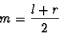

0.3.2 The Mergesort
This algorithm is very easy to understand and exhibits good runtime
speed for most data sets. Like the previously analyzed Quicksort, the
Mergesort reiterates on the dataset, dividing it into ever smaller
portions and sorting each subdivision. The Mergesort chops partitions
in half by using the formula:

Next, the Mergesort reiterates on both of the newly formed partitions,
chopping them in half and continuing the process. This subdivision
stops when the partition size reaches one item.
At this point the algorithm has created many one-item data sets. Any
one-item set is in ``sorted'' order by definition. The next step in
the process is to merge these data sets together thus creating ever
larger sorted sets.
To combine two sorted lists the Mergesort compares successive pairs of
elements, one from each list. If the one from list ``A'' has a
smaller key, it it chosen to be appended to the aggregate list. Of
course the opposite applies if the element we are examining from list
``B'' proves to have a smaller key value. In the event that either
input list is exhausted, all the remaining elements on the other list
are appended to the aggregate list. While this merging algorithm will
work with two sorted input lists of unequal size, in order to minimize
the number of calls to the routine, Mergesort tries to combine lists
with the same (or close to the same) number of elements. This merging
process takes at least
 comparisons and no more than
(n-1) comparisons.
comparisons and no more than
(n-1) comparisons.
Mergesort repeats the process of combining sorted sublists into
ever larger aggregate lists until all have been successfully
integrated back into a single, sorted list.
|